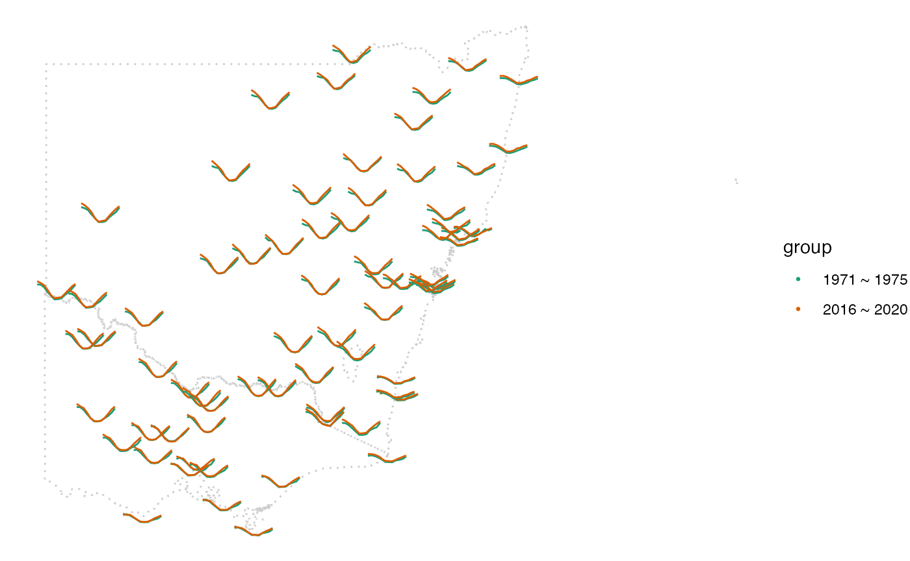

2. Data manipulation with cubble
2-data-manip-with-cubble.RmdThis vignette introduces how to perform spatial and temporal manipulate in a cubble with dplyr verbs. We will illustrate with weatherdata::historical_tmax data, which have the historical maximum temperature recorded for Australian stations with the earliest dating back to 1859.
Spatial manipulation
historical_tmax is already in a nested cubble format, which is suitable for station-wise manipulation. rnoaa construct the station id by prefix ASN00 to the Bureau of Meteorology (BOM) station number. In BOM’s numbering system, the 2nd and 3rd digit denotes the state a station is located in and this is equivalent to the 7th to 8th digit in our string. We can mutate/ filter station in a particular state based on this information and here we add a column called state_id and filter out the ones in New South Wales and Victoria (ranging from 46 to 90).
tmax_nested <- weatherdata::historical_tmax %>%
mutate(state_id = stringr::str_sub(id, 7, 8)) %>%
filter(between(state_id, 46, 90))
tmax_nested %>% head(5)
#> # cubble: id [5]: nested form
#> # bbox: [141.26, -34.04, 146.87, -29.96]
#> # temporal: date [date], tmax [dbl]
#> id latitude longitude elevation name wmo_id element first_year last_year
#> <chr> <dbl> <dbl> <dbl> <chr> <dbl> <chr> <int> <int>
#> 1 ASN00… -34.0 141. 43 lake … 94692 TMAX 1966 2021
#> 2 ASN00… -32.4 142. 61 menin… 94694 TMAX 1959 2021
#> 3 ASN00… -32.0 141. 281. broke… 94691 TMAX 1957 2021
#> 4 ASN00… -30.0 147. 115 brewa… 95512 TMAX 1965 2021
#> 5 ASN00… -31.5 146. 260 cobar… 94711 TMAX 1962 2021
#> # … with 3 more variables: id1 <chr>, ts <list>, state_id <chr>Temporal manipulation
There are some operations in the time dimension we would like to make:
- Extract observations in a particular period, say, those in 1971 to 1975 and 2016 to 2020. This can be used to compare the historical and recent climate.
- Summarise daily records into monthly to remove sparsity
These time dimension operations can be computed in the long form and stretch() converts a nested cubble to a long cubble. From a long cubble, we can write the exact same dplyr codes to complete the two tasks:
tmax_long <- tmax_nested %>%
stretch() %>%
filter(lubridate::year(date) %in% c(1971:1975, 2016:2020)) %>%
mutate(month = lubridate::month(date),
group = as.factor(ifelse(
lubridate::year(date) > 2015,
"2016 ~ 2020",
"1971 ~ 1975"
))) %>%
group_by(month, group) %>%
summarise(tmax = mean(tmax, na.rm = TRUE))
tmax_long %>% head(5)
#> # cubble: date, id [1]: long form
#> # bbox: [141.26, -39.13, 153.37, -28.97]
#> # spatial: latitude [dbl], longitude [dbl], elevation [dbl], name [chr], wmo_id
#> # [dbl], element [chr], first_year [int], last_year [int], id1 [chr],
#> # state_id [chr]
#> id month group tmax
#> <chr> <dbl> <fct> <dbl>
#> 1 ASN00047016 1 1971 ~ 1975 31.1
#> 2 ASN00047016 1 2016 ~ 2020 34.6
#> 3 ASN00047016 2 1971 ~ 1975 30.9
#> 4 ASN00047016 2 2016 ~ 2020 32.6
#> 5 ASN00047016 3 1971 ~ 1975 28.1Back to spatial
A data quality issue with the rnoaa data is that while it records the first and last year recorded of each series, it doesn’t report the period of missingness. For example, station ASN00047048 starts it first record in 1957, pauses for a period from 1963 to 1990, and then resumes it recording till today. Out of the 77 stations in New South Wales and Victoria, 7 stations have this issue and we would like to remove those stations from the comparison.
Again, this is a station-wise operation and to convert back from the long cubble to a nested one, use tamp(). Here we keep the stations with 24 observations (12 months for both periods) after the monthly aggregation.
tmax_nested2 <- tmax_long %>%
tamp() %>%
filter(nrow(ts) == 24)
tmax_nested2 %>% head(5)
#> # cubble: id [5]: nested form
#> # bbox: [141.26, -34.04, 148.59, -29.54]
#> # temporal: month [dbl], group [fct], tmax [dbl]
#> id latitude longitude elevation name wmo_id element first_year last_year
#> <chr> <dbl> <dbl> <dbl> <chr> <dbl> <chr> <int> <int>
#> 1 ASN00… -34.0 141. 43 lake … 94692 TMAX 1966 2021
#> 2 ASN00… -32.4 142. 61 menin… 94694 TMAX 1959 2021
#> 3 ASN00… -30.0 147. 115 brewa… 95512 TMAX 1965 2021
#> 4 ASN00… -31.5 146. 260 cobar… 94711 TMAX 1962 2021
#> 5 ASN00… -29.5 149. 145 colla… 95520 TMAX 1965 2021
#> # … with 3 more variables: id1 <chr>, state_id <chr>, ts <list>The final step
In some visualisation, we may need information from both spatial and temporal dimension. One example of this is a glyph map, where spatial variables, i.e. longitude and latitude, are used to construct the major axes and temporal variables, i.e. month and tmax, are used to construct the minor axes. This requires these variables to be in the same table, rather than in different forms. In cubble, you can append spatial variables that are invariant to the key withe migrate()
tmax_long2 <- tmax_nested2 %>%
stretch() %>%
migrate(latitude, longitude)
tmax_long2 %>% head(5)
#> # cubble: date, id [1]: long form
#> # bbox: [141.26, -39.13, 153.37, -28.97]
#> # spatial: latitude [dbl], longitude [dbl], elevation [dbl], name [chr], wmo_id
#> # [dbl], element [chr], first_year [int], last_year [int], id1 [chr],
#> # state_id [chr]
#> id month group tmax latitude longitude
#> <chr> <dbl> <fct> <dbl> <dbl> <dbl>
#> 1 ASN00047016 1 1971 ~ 1975 31.1 -34.0 141.
#> 2 ASN00047016 1 2016 ~ 2020 34.6 -34.0 141.
#> 3 ASN00047016 2 1971 ~ 1975 30.9 -34.0 141.
#> 4 ASN00047016 2 2016 ~ 2020 32.6 -34.0 141.
#> 5 ASN00047016 3 1971 ~ 1975 28.1 -34.0 141.Glyph map
Now its time for the glyph map!
nsw_vic <- ozmaps::abs_ste %>%
filter(NAME %in% c("Victoria", "New South Wales"))
p1 <- plot_map(nsw_vic, fill = "transparent") +
geom_glyph(data = tmax_long2,
aes(x_major = longitude, y_major = latitude,
x_minor = month, y_minor = tmax,
group = interaction(group, id), color = group),
height = 0.8, width = 1) +
scale_color_brewer(palette = "Dark2")
p1
We see, on average, a higher maximum temperature in the recent years as compared to the first half of 1970s. This is observable in the beginning of the year in most of stations in New South Wales and end of the year in both New South Wales and Victoria. Maximum temperature during winter doesn’t seem to change much in these two periods.
In order to know which month the average maximum temperature starts to diverge after winter in these two periods, we can inset a glyph with more detailed annotation on labels and axes. This can be done through the ggimg package where you first create the glyph you want to inset, save it, and use ggimg::geom_point_img to inset it as an image. Here we pick station ASN00085072 to make the glyph and it says there has been a warmer November in recent years!
tmax_long %>% filter(id == "ASN00085072") %>%
ggplot(aes(x = month,
y = tmax,
color = group)) +
geom_line(size = 1.5) +
scale_color_brewer(palette = "Dark2", guide = "none") +
scale_x_continuous(breaks = seq(1, 12, 1)) +
labs(x = "Month", title = "ASN00085072: East Sale Airport") +
theme_bw() +
theme(
aspect.ratio = 0.5,
axis.text = element_text(size = 20),
title = element_text(size = 20)
)
#ggsave(filename = here::here("man/figures/hist-tmax-single.png"))
box_df <- tmax_nested %>% filter(id == "ASN00085072")
single <-
tibble::tibble(img = here::here("man/figures/hist-tmax-single.png"))
p1 +
geom_rect(
data = box_df,
aes(
xmin = longitude - 0.6,
xmax = longitude + 0.6,
ymin = latitude - 0.12,
ymax = latitude + 0.2
),
fill = "transparent",
color = "black"
) +
ggimg::geom_point_img(data = single,
aes(x = 155, y = -37, img = img), size = 7)